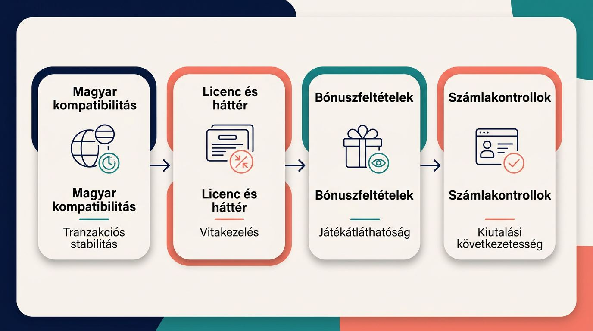
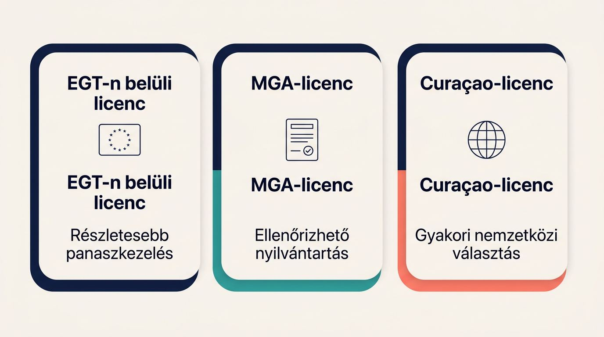
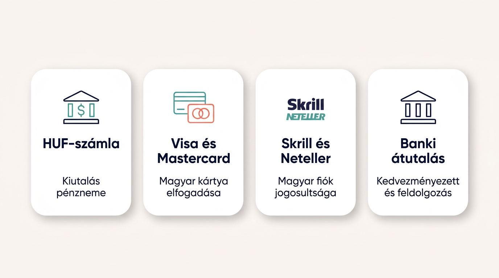
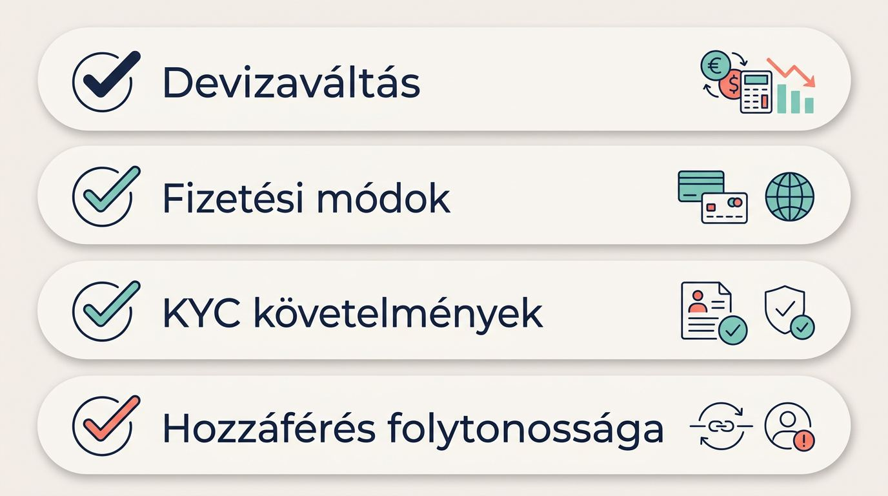

Így értékeljük a külföldi kaszinókat magyar játékosoknak
A külföldi kaszinók értékelése magyar lakosként a regisztrációtól a kiutalásig tartó teljes számlaút vizsgálatán alapul.

Nemzetközi licencek és működési modellek

Fizetés, HUF és kifizetési sebesség

Üdvözlő bónuszok és ingyenes pörgetések

Gyakorlati különbségek magyar játékosoknak
